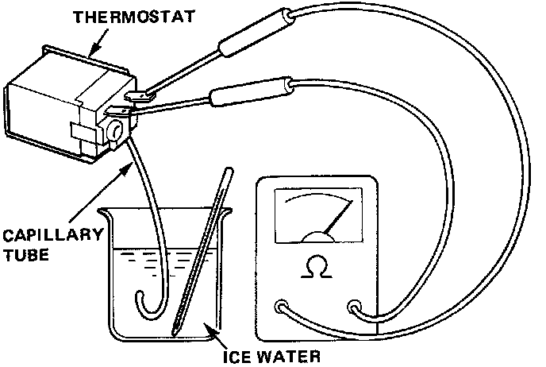

Evaporator Temperature Sensor / Switch: Testing and Inspection
Thermostat
Dip the thermostat capillary tube into a pan filled with ice water, and check for continuity.
Cut-off 1.5 - O.5°C (35 - 33°F}
Cut-in 2.5 - 5.0°C (37 - 41°F)
If cut-off or cut-in temperature is too low or too high, replace the thermostat.
The cut-off and cut-in of the thermostat must not be gradual, but sudden.